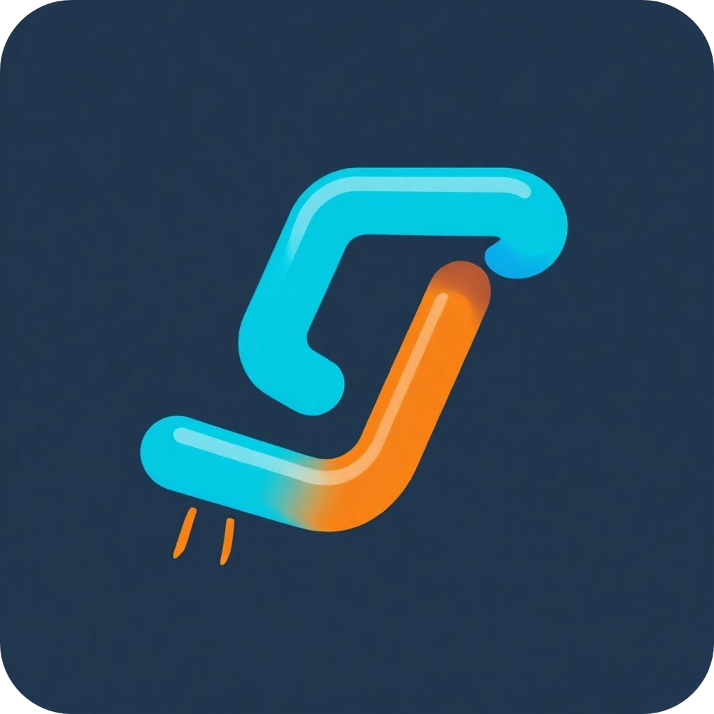

功能
刪除的密碼保護
- 刪除 URL 時需要輸入密碼。您可以在網頁控制台中設置刪除密碼。
- 密碼以哈希形式存儲在數據庫中。
網頁介面
- 提供簡單的網頁介面，使用戶能夠輕鬆添加和刪除 URL。
- 用戶可以在伺服器的根 URL 訪問 UI。

自定義 URL
- 用戶可以創建自定義的短 URL，而不是隨機生成的鏈接。此功能便於記憶鏈接。
開源
- Linklie 是免費和開源的，並可在 GitHub 上獲得。歡迎貢獻！
輕鬆部署
- Linklie 可以使用 Docker 或 Node.js 輕鬆部署。請按照以下說明快速啟動伺服器。
API
- Linklie 提供簡單的 API 用於創建和刪除 URL。API 可以通過 HTTP 請求訪問。
- 用戶可以使用 API 創建自己的網頁儀表板。
無日誌政策
- 伺服器不存儲任何訪客日誌，確保用戶隱私和數據保護。